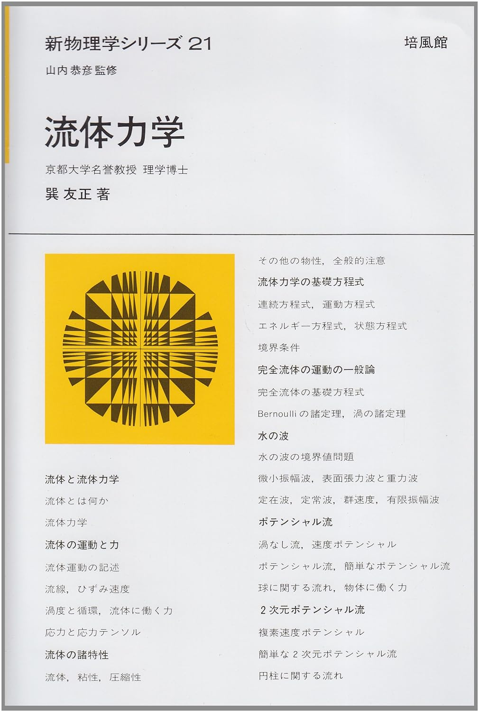
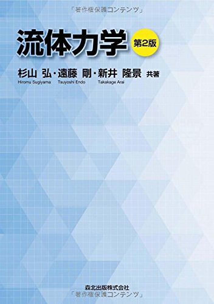

流体力学
流体力学のおすすめ参考書です。理学系か工学系かで勉強方針が大きく変わります。
マンガでわかる流体力学
「マンガでわかる」シリーズの中でもかなりよく書かれている良書。現象に対するイメージが大切な流体力学を勉強する上でイラスト豊富なこの本は初学者にとってかなり役に立つだろう。この本で一通り流体力学に関する用語に対して親近感を抱いてからより専門的な教科書に進むとよい。

流体力学 巽友正著
知り合いの流体力学専攻の院生に「どうして流体を専門にしたの？」と聞くと、その多くが「この本を読んだから」と答えるほど危険（？）な一冊。高度な内容がギュっと簡潔にまとめられており、どこか心地良い。物理学として流体を学ぶ際には必携の教科書だろう。

流体力学
扱われているテーマは決して簡単ではないが、式の変形が非常に丁寧に書かれており読みやすい。数値流体力学についての章があるのが特徴的。付録についている「流体力学の歴史」も非常にまとまっており興味深い。